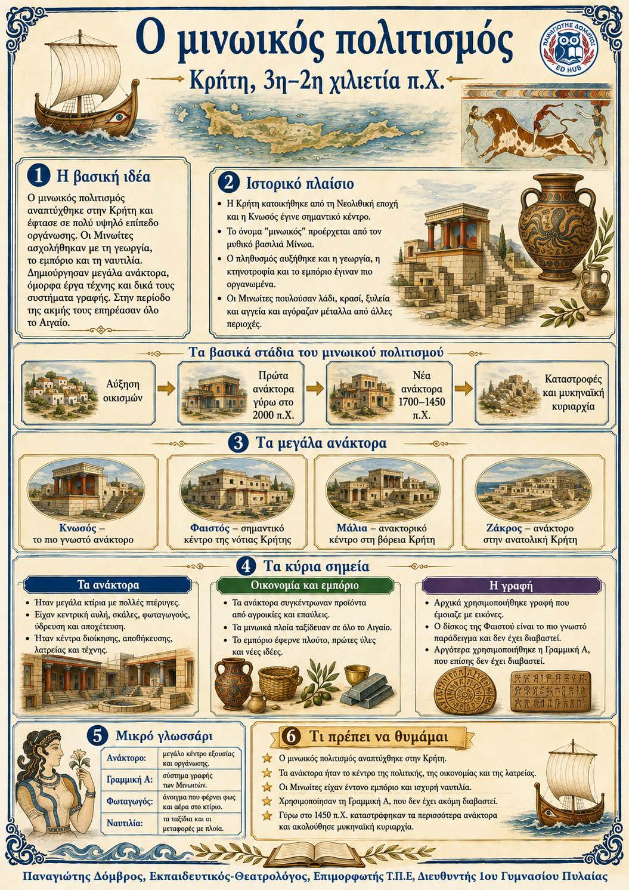

Πληροφοριογράφημα ενότητας
Το πληροφοριογράφημα αυτής της ενότητας δεν έχει ανέβει ακόμη. Οι σημειώσεις παραμένουν πλήρως διαθέσιμες.

Κεφάλαιο Β΄ · Κρήτη, 3η-2η χιλιετία π.Χ.
Ο μινωικός πολιτισμός αναπτύχθηκε στην Κρήτη και έγινε πολύ οργανωμένος. Τα ανάκτορα ήταν τα κέντρα της διοίκησης, της οικονομίας, της θρησκείας και της τέχνης. Τα μινωικά πλοία ταξίδευαν στο Αιγαίο και στην Ανατολική Μεσόγειο. Η Γραμμική Α μάς δίνει στοιχεία για τη διοίκηση, αλλά δεν έχει ακόμη διαβαστεί.
